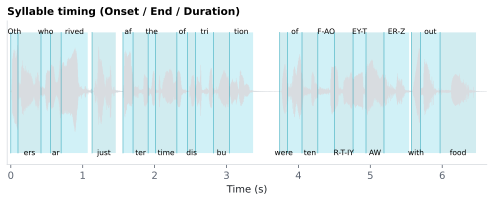

6.3.1Syllable timing (Onset / End / Duration)
Per-syllable acoustic timing in the <stim>_syllables.csv sidecar.
6.3.1.1What it is
Per-syllable acoustic timing in the <stim>_syllables.csv sidecar:
| Column | Meaning |
|---|---|
Onset |
Time the syllable begins, in seconds from audio start. |
End |
Time the syllable ends, in seconds from audio start. |
Duration |
End − Onset, in seconds. |
Each row joins back to its word via the foreign-key columns
(doc_id, sentence_id, token_in_sentence_id, syllable_id). Syllables that did not
align (rare — usually an unrecognized phone sequence) are present in
the CSV with NaN for all three columns.
6.3.1.2See it

6.3.1.3In your output
| token | syllable_id | Label | Onset seconds | End seconds | Duration seconds |
|---|---|---|---|---|---|
| Others | 1 | Oth | 0 | 0.1 | 0.1 |
| Others | 2 | ers | 0.1 | 0.42 | 0.32 |
| who | 1 | who | 0.42 | 0.55 | 0.13 |
| arrived | 1 | ar | 0.55 | 0.7 | 0.15 |
| arrived | 2 | rived | 0.7 | 1.07 | 0.37 |
| just | 1 | just | 1.13 | 1.46 | 0.33 |
| after | 1 | af | 1.56 | 1.7 | 0.14 |
| after | 2 | ter | 1.7 | 1.91 | 0.21 |
| the | 1 | the | 1.91 | 2.01 | 0.1 |
| time | 1 | time | 2.01 | 2.31 | 0.3 |
| of | 1 | of | 2.31 | 2.46 | 0.15 |
| distribution | 1 | dis | 2.46 | 2.57 | 0.11 |
6.3.1.4MATLAB
% Load the syllable-level table (one row per syllable)
T = readtable('syllable/LJ002-0321_syllables.csv', 'TextType', 'string');
T.Properties.VariableNames % every column in the file
head(T(:, {'token', 'syllable_id', 'Label', 'Onset', 'End', 'Duration'}), 10) % this feature's columns (first rows)
% Plot
ok = ~isnan(T.Onset);
stem((T.Onset(ok) + T.End(ok)) / 2, T.Duration(ok)); xlabel('Time (s)'); ylabel('Duration')
6.3.1.5Library / dependency
- MFA must be installed and the word-level alignment must have run —
syllable timing is computed from the phones tier of the same
TextGrid (
align_with_phones). pyphenis required for the fallback orthographic syllable count used when phone-level data is missing — without it the articulation rate column also degrades to NaN.
6.3.1.6In the code
Source: sensi/extractors/syllabify.py:syllabify_word (downstream of
acoustic_boundaries). Syllabification is
performed on MFA's phones tier via the Maximum Onset Principle
(MOP): vowels (phones with a stress digit) are nuclei, and all
consonants between two nuclei are assigned to the following
syllable's onset — maximizing onset length without a phonotactic
legality check (Hayes 2009 describes the general principle; this
implementation does not enforce language-specific onset-cluster
constraints beyond the maximal split).
Per-syllable timing is then:
Onset = onset of the first phone in the syllable
End = end of the last phone in the syllable
Duration = End − Onset
PUNCT and unaligned words contribute no rows. Each word with N phones generates ≥ 1 syllable rows.
6.3.1.7EEG rationale
Syllables are the natural perceptual unit of rhythm in speech, and syllable-locked EEG responses are increasingly used as a finer-grained alternative to word-locked analyses:
- Syllable onsets drive delta–theta cortical tracking (1–8 Hz envelope-following responses) — the standard measure of speech-rhythm entrainment (Giraud 2012, Ding 2014).
- For analyses of stress or prosody, syllable-level timing is more faithful than word-level timing because stress placement falls on syllables, not words (Hayes 2009 — standard phonological treatment).
- The combination of
OnsetandP_Centergives two complementary syllable anchors —Onsetfor envelope alignment,P_Centerfor perceptual-rhythm alignment.
6.3.1.8Papers
- Hayes 2009 Hayes. Introductory Phonology. Wiley-Blackwell. — Maximum Onset Principle reference.
- Giraud 2012 Giraud & Poeppel. Cortical oscillations and speech processing: Emerging computational principles and operations. Nature Neuroscience. doi:10.1038/nn.3063 — syllable-rate cortical tracking.
- Ding 2014 Ding & Simon. Cortical entrainment to continuous speech: functional roles and interpretations. Frontiers in Human Neuroscience. doi:10.3389/fnhum.2014.00311